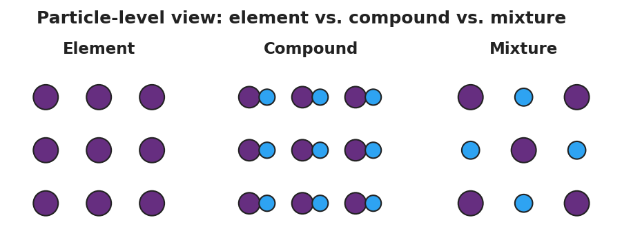

01 Phenomenon
Four samples are on the front bench: a strip of copper wire, a jar of distilled water, a cup of saltwater, and a spoonful of trail mix. Each one is matter — but is each made of just one substance, or many substances mixed together? The trail mix is obviously many things. But the distilled water and the saltwater look identical — two clear, colorless liquids — and yet one is a single substance and the other is a mixture. Appearance alone won’t tell you which is which.
02 Driving question
How can we tell whether a sample is one substance or many?
03 Notice & wonder
| I notice… | I wonder… |
|---|---|
Turn & Talk #1: The distilled water and the saltwater look identical. What test — not just looking — could you actually do to find out which one is a single substance and which one is a mixture?
04 Initial model
Before your teacher names anything, sort the ten samples below into groups that make sense to you. You decide the rule. Then, in the last column, write a short note on what each group has in common.
Samples: copper, oxygen gas (O₂), distilled water, table salt (NaCl), saltwater, air, trail mix, sand + iron filings, carbon dioxide (CO₂), brass.
| Sample | My group (1, 2, 3, or 4) | My rule — what does this group have in common? |
|---|---|---|
| copper | ||
| oxygen gas (O₂) | ||
| distilled water | ||
| table salt (NaCl) | ||
| saltwater | ||
| air | ||
| trail mix | ||
| sand + iron filings | ||
| carbon dioxide (CO₂) | ||
| brass |
05 Investigate
Part 1 — Re-sort into four bins
Now re-sort using this rule. First decide if each sample is a PURE substance (cannot be physically separated) or a MIXTURE (can be physically separated). Then split each into two. Don’t worry about the names yet — just get the four piles right.
| Bin | Rule for this bin | Samples I placed here |
|---|---|---|
| Bin A | Pure — one kind of atom | |
| Bin B | Pure — two or more kinds of atoms bonded together | |
| Bin C | Mixture — looks uniform all the way through | |
| Bin D | Mixture — you can see the separate parts |
Part 2 — Mystery Samples
Your teacher will give you 3–4 numbered unknown samples. For each one, observe its appearance, try a physical separation (evaporate a drop, filter, or test with a magnet), and classify it.
| Sample # | Looks uniform or non-uniform? | What happened when you tried to separate it? | Pure substance or mixture? |
|---|---|---|---|
| 1 | |||
| 2 | |||
| 3 | |||
| 4 |
Key question: Two of the bench samples — distilled water and saltwater — look identical. Which physical test would separate one of them but leave the other unchanged, and what would that prove?
Part 3 — Draw the particle models
Look at the figure below. In the boxes, draw your own particle diagrams: an element (one kind of atom), a compound (two kinds of atoms bonded), and a mixture (two kinds of atoms, not bonded). Label each one.

| My ELEMENT drawing | My COMPOUND drawing | My MIXTURE drawing |
|---|---|---|
How many kinds of atoms are in your element drawing? _______________
What is the difference between your compound drawing and your mixture drawing?
06 Make it make sense
For each sample below, classify it as fully as you can and give a particle-level reason. Use the words pure substance, mixture, element, compound, homogeneous, and heterogeneous where they fit.
Copper wire. A strip of clean, shiny copper.
- Pure substance or mixture? _______________________________________________
- If pure: element or compound? _______________________________________________
- Particle-level reason: _______________________________________________
Saltwater. A clear, colorless liquid made by dissolving table salt in water.
- Pure substance or mixture? _______________________________________________
- If a mixture: homogeneous or heterogeneous? _______________________________________________
- How could you physically separate it? _______________________________________________
Trail mix. Raisins, peanuts, and chocolate pieces in a bag.
- Pure substance or mixture? _______________________________________________
- If a mixture: homogeneous or heterogeneous? _______________________________________________
- How do you know without any test? _______________________________________________
Carbon dioxide (CO₂). A colorless gas.
- Pure substance or mixture? _______________________________________________
- If pure: element or compound? _______________________________________________
- How many kinds of atoms are in one CO₂ particle? _______________________________________________
07 Key vocabulary
- pure substance
- matter made of only one kind of particle that cannot be physically separated into other substances; a pure substance is either an **element** (one kind of atom, e.g. copper, O₂) or a **compound** (two or more kinds of atoms chemically bonded in a fixed ratio, e.g. H₂O, NaCl)
- mixture
- two or more substances physically combined but not chemically bonded, in a variable ratio, that can be separated by a physical change (evaporation, filtration, a magnet); e.g. saltwater, air, trail mix
- homogeneous
- describing a mixture that is uniform throughout, so the separate components cannot be seen (e.g. saltwater, air); contrasted with a *heterogeneous* mixture, which is visibly non-uniform and whose components can be seen and often physically separated (e.g. trail mix, sand and iron)
Use each term in a sentence about today’s investigation. Do not copy the definition — describe something you actually sorted, observed, or tested.
pure substance: _______________________________________________ _______________________________________________
mixture: _______________________________________________ _______________________________________________
homogeneous: _______________________________________________ _______________________________________________
08 Revise your model
Return to your four-bin sort. Now that you have the vocabulary, re-label each bin with the correct term:
- Bin A = _______________ (Pure — one kind of atom)
- Bin B = _______________ (Pure — two or more kinds of atoms bonded)
- Bin C = _______________ mixture (looks uniform)
- Bin D = _______________ mixture (you can see the parts)
Then finish this Because / But / So sentence about the opening phenomenon:
Distilled water and saltwater look identical because __________________________________________, but __________________________________________, so __________________________________________.
09 Exit ticket
- Classify helium gas (He). Is it a pure substance or a mixture? An element or a compound? Explain your reasoning at the particle level.
- Classify a bottle of Italian salad dressing that has separated into an oil layer and a vinegar-and-herb layer. Pure substance or mixture? Homogeneous or heterogeneous? Explain.
- In one sentence, explain how a homogeneous mixture (like saltwater) is different from a compound (like water), even though both can look like a single clear liquid.
10 Explore further
- Classification-of-matter sorting activity (Active Learning): Students receive a set of sample cards — copper, oxygen gas, distilled water, table salt (NaCl), saltwater, air, trail mix, sand-and-iron mixture, carbon dioxide, brass — and physically sort them into a four-bin organizer (element / compound / homogeneous mixture / heterogeneous mixture). They must justify each placement with a particle-level reason, not just a guess. Connect to `figures/classification_of_matter_tree.png` and `figures/particle_models.png`.
- "Mystery samples" lab: Provide 3–4 numbered unknown samples (e.g., a uniform clear liquid, a cloudy suspension, a single shiny solid, a visibly grainy solid mixture). Students observe (uniform vs. non-uniform appearance), test whether components can be physically separated (filter, evaporate, magnet), and classify each sample. No reagents beyond water, salt, sand, iron filings, and a magnet are required.
- Particle-diagram check: Students draw particle models for an element, a compound, and a mixture and label which is which — mirroring `figures/particle_models.png`.